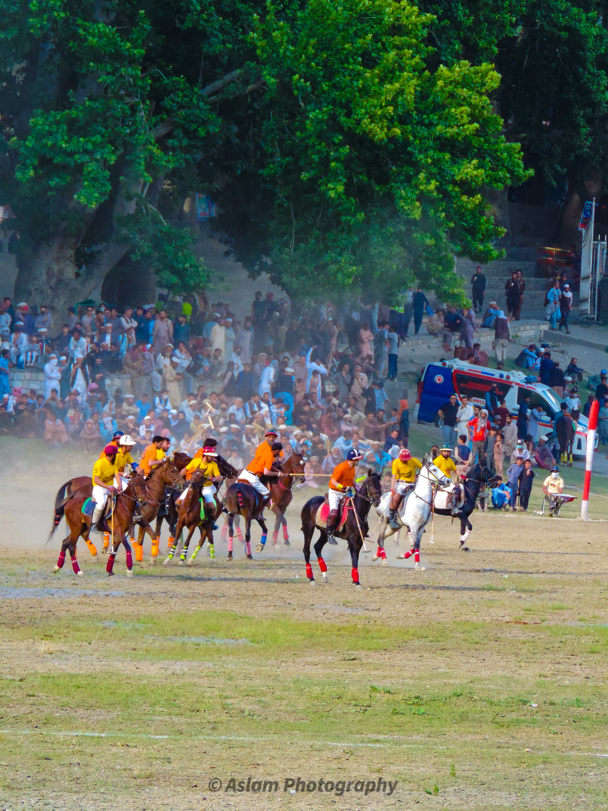

Chitral Beautiful Places
You Must Visit in 2024
Chitral Valley in Pakistan is a stunning place to visit. It becomes even more beautiful in the summer with melting snow, flowing rivers, and lush green landscapes. The weather is perfect during this time. In winter, heavy snowfall covers the mountains, creating a magical scene. The weather in Chitral during winter is freezing due to the snow and glaciers. The entire valley is breathtaking, with its rivers, mountains, landscapes, friendly people, and unique weather, making it a peaceful and memorable vacation spot.
List of Top 16 Chitral Beautiful Places
Here is the list of 16 Chitral beautiful places you should visit
- Shandur Pass
- Chitral Gol National Park
- Chitral Fort (Mehfil-e-Moseq)
- Birir Valley
- Garam Chashma
- Tirich Mir
- Bumburet Valley
- Izmis Lake
- Mastuj Fort
- Booni
- Shahi Mosque Chitral
- Buni Village
- Madaklasht
- Rumbur Valley
- Chitral Museum
- Karimabad(Oxor)
Details About The Places
- Shandur Pass
- Best time to visit: April to November
- Chitral Gol National Park
- Best time to visit: May and June
- Chitral Fort (Mehfil-e-Moseq) Chitral Fort, also known as Mehfil-e-Moseq, is a historic fortress situated in the captivating region of Chitral in Khyber Pakhtunkhwa, Pakistan. This fort holds significant cultural and historical importance, reflecting the rich heritage of the area. Mehfil-e-Moseq, as the fort is locally known, stands as a testament to the architectural prowess of the region. Visitors to Chitral Fort can immerse themselves in the enchanting atmosphere of the past while exploring its sturdy walls and intricate design. The fort not only serves as a symbol of the area’s history but also provides panoramic views of the surrounding landscapes, offering a glimpse into the natural beauty that characterizes Chitral. Whether you are interested in history, or architecture, or simply wish to enjoy the scenic surroundings, Chitral Fort (Mehfil-e-Moseq) is a must-visit destination that captures the essence of Chitral’s cultural and historical heritage.
- Best time to visit: Throughout the year
- Birir Valley Situated to the south of Bumburet, this is the most diminutive among the Kalash side valleys. Characterized by its underdeveloped status, this hidden gem receives relatively few visitors throughout the year. The quaint charm of the area lies in its lesser-known status, offering an authentic and less-trodden experience for those who venture into its serene landscapes. The valley, though petite in size, exudes a unique allure, with its untouched beauty and a sense of seclusion contributing to its distinct appeal. Visitors can anticipate a tranquil escape from the hustle and bustle, immersing themselves in the unspoiled surroundings and cultural authenticity that define this off-the-beaten-path destination.
- Best time to visit: May to June
- Garam Chashma Beautiful Hindu Kush mountains of Chitral, Garam Chashma is a charming valley situated 2,550 meters above sea level. It’s a popular spot known for its hot springs, prized trout fish, and precious stones, making it a go-to place for nature lovers. Garam Chashma offers a mix of activities like rock climbing, fishing, and enjoying the soothing natural springs in a peaceful setting. What’s cool is that these springs are not just for relaxation. They are known for helping with skin issues and headaches. There are special spots for visitors to take showers with this therapeutic spring water. Ever wondered why the water is so warm? Well, it’s because thre’s a lot of sulfur underground. This sulfur heats the water, making it reach temperatures close to 260 degrees Celsius, creating a unique and warm experience in Garam Chashma. So, if you’re into nature, soothing hot springs, and a bit of adventure, Garam Chashma is worth checking out!
- Best time to visit: April to August
- Tirich Mir
- Best time to visit: June to November
- Bumburet Valley
- Best time to visit: May to October
- Izmis Lake
- Best time to visit: June to September
- Mastuj Fort
- Best time to visit: April to October
- Booni
- Best time to visit: November and December
- Shahi Mosque Chitral
- Best time to visit: April to September
- Governor Cottage
- Best time to visit: April to November
- Madaklasht
- Best time to visit: March to September
- Rumbur Valley
- Best time to visit: July to August
- Chitral Museum
- Best time to visit: April to October
- Karimabad (Oxor)
- Best time to visit: April to October
A mountain pass that proudly stands at a whopping 3,700 meters, higher than any other you’ve ever seen. Now, drop it right between Chitral and Ghizer like nature’s own high-flying border. Now, if you’re the type who craves adventure, you’re in for a treat. These roads aren’t your typical smooth drives; they’re narrow, bumpy, and gravel-covered. You’ll be cruising mostly in 1st and 2nd gears, navigating turns that keep you on your toes. The roads are so slim that only one vehicle can pass at a time! It’s not just a road; it’s an adrenaline-pumping adventure. Imagine steering through breathtaking landscapes, feeling the wind in your hair, and taking on a road that’s as thrilling as it is picturesque. This mountain pass isn’t just a pathway; it’s a journey full of surprises, where each turn brings a new high and the views are just as exhilarating as the ride itself.
Chitral Gol National Park is like a nature wonderland next to the Chitral River, just a 2-hour drive from Chitral Town. It’s also called Chitral National Park. This huge park covers 7,750 hectares and goes up to 5,000 meters high. Getting there is an exciting adventure on a narrow and risky road. Once you’re in, get ready for some amazing sights! There are three valleys, big glaciers, and clear streams coming from the ice. The park is full of tall cedar trees that make it even more beautiful. And guess what? The park is like a big animal party! You can find Markhor, ibex, black bears, wolves, red foxes, and even Himalayan otters. There’s also a bird party with vultures, golden eagles, falcons, and colorful birds like monal, snowcocks, and rock partridges. So, if you’re into nature and animals, make sure to put Chitral National Park on your list of places to visit. It’s not just a park; it’s a whole adventure with stunning views and lots of wildlife to discover.
Tirich Mir is the tallest mountain in the world outside the Himalayas-Karakoram Range. It’s in the Mulkow Valley in the Chitral district and reaches a height of 7,708 meters. In the Wakhi language, Tirich means darkness, and Mir means king. So, Tirich Mir translates to the King of Darkness. This name might come from the shadows it casts on the Wakhan side. The weather on Tirich Mir can be extreme, with temperatures ranging from a high of 13°C in July to a bone-chilling -12°C in winter. So, if you’re planning a visit, June-July is the best time. TourMover offers top-notch and budget-friendly travel services in Chitral. From rental cars and hotels to local tour guides, we’ve got you covered for a fantastic trip to this beautiful place.
Bumburet is the biggest valley in Kalasha Desh, located in the Chitral District of Khyber Pakhtunkhwa, Pakistan. It’s home to the Kalash people, a unique ethnic group with their religion. The valley offers beautiful views of snowy mountains and lush green forests, along with a rich culture and history. Bumburet Valley is famous for its stunning scenery and mountain treks. Visitors can explore villages connected by small paths and experience the friendly hospitality of the locals. Traditional activities like milking cows and enjoying local meals are also on the agenda. For adventure seekers, Bumburet Valley offers trekking, horseback riding, and climbing. There are rivers and lakes for fishing and swimming. No matter your interests, there’s something for everyone in this gorgeous region.
Izmis Lake is like a secret hideaway in the mountains a calm and quiet place surrounded by nature’s beauty. Imagine taking a gentle boat ride on the clear water or strolling along the peaceful shores. It’s a perfect spot to relax and enjoy the fresh mountain air. This special lake, hugged by tall mountains, is not just pretty to look at it’s a great place to take a break from the busyness of life. If you want some quiet time or just love being in nature, Izmis Lake is the ideal spot. With its stunning views and peaceful atmosphere, it’s a place where you can make wonderful memories and feel close to the beauty of the mountains. So, if you’re up for a little adventure and a lot of tranquility, come and explore Izmis Lake, where every tiny wave and every view will make you feel the calmness of this hidden treasure.
Mastuj Fort is like a big history book standing in Chitral. It’s an old, strong building that holds stories from a long time ago. When you visit, imagine the tough walls telling you about the people who lived here and the adventures they had. It’s like taking a trip back in time. This fort is special because it’s not just bricks and stones. A reminder of the brave people who protected these lands. The way it’s built tells stories of important battles and how strong the people were.
In the beautiful crown of Chitral Valley, you’ll find a precious gem called Booni. Just like other valleys, Booni is stunningly beautiful and worth a visit when exploring the charming towns of Chitral. Its unique fan-shaped land formations are created by the cool work of glaciers. This natural wonder is a big draw for tourists who come to marvel at the landscape. Booni is also a smart town. People here have great schools to learn from, and there’s even a Pakistan Tourism Development Corporation (PTDC) Motel for visitors to stay in. If you decide to spend your vacation here, TourMover has got your back. In the summer, Booni gets warm and sunny, thanks to its direct exposure to sunlight. But in the winter, it gets super cold. Apart from the weather, Booni is also known for growing all sorts of yummy stuff like vegetables, fruits, and crops. So, if you’re into beautiful landscapes, smart towns, and maybe some fresh local produce, Booni is the place to be.
Shahi Mosque Chitral, a magnificent symbol of Chitral’s rich cultural heritage, stands as a testament to the region’s architectural splendor. This grand mosque, with its intricate design and towering minarets, invites visitors to marvel at the craftsmanship and spiritual significance it holds. Situated in the heart of Chitral, Shahi Mosque is not merely a place of worship but a cultural gem that reflects the artistry and devotion of the community. The mosque’s serene courtyard and expansive prayer halls provide a tranquil space for both locals and visitors to connect with the spiritual essence of Chitral.
In the middle of Chitral Valley, there’s this cool place called Governor Cottage. It’s not just any house; it’s built specially by people in Chitral build houses. And guess what? It’s surrounded by big mountains and lots of greenery, making it super pretty. What’s even cooler is that this place has old things from a long time ago. It’s like a museum inside the house. These old things tell stories about how Chitral was a long time ago, and it’s exciting. If you like pretty houses, mountains, and hearing stories from the past, you should check out Governor Cottage in Chitral.
Madaklasht, a captivating region nestled in the heart of Chitral, is a delightful escape for nature enthusiasts. Surrounded by majestic mountains and lush greenery, Madaklasht boasts a serene ambiance that captivates visitors. This picturesque area is known for its pleasant weather, making it an ideal destination throughout the year. Whether you’re a fan of vibrant spring blossoms, the coolness of summer, or the tranquility of winter, Madaklasht has something to offer in every season. Visitors can explore the local culture and traditional practices of the inhabitants, providing an authentic experience. The landscape is adorned with meadows, making it a perfect spot for a stroll or a peaceful picnic. For those seeking adventure, Madaklasht offers hiking opportunities, allowing you to witness panoramic views of the surrounding mountains. The blend of natural beauty and cultural richness makes Madaklasht a must-visit destination for a well-rounded Chitral experience.
Rumbur Valley encompasses numerous quaint, underdeveloped villages situated to the north of Bumburet. This scenic haven is a popular destination, often bustling with foreign tourists. With its expansive landscapes and charming villages, Rumbur Valley offers ample exploration opportunities, ensuring that you can easily spend at least two days immersed in its serene surroundings.
Chitral district in KPK is like a treasure trove of heritage and culture, known and admired all around the world. To celebrate and preserve this rich cultural tapestry and the breathtaking scenery of Chitral, the Chitral Museum comes to life. Step into the museum, and you’ll find two exciting galleries waiting for you. The ethnological gallery and the archaeological gallery. The ethnological gallery is like a peek into the everyday life of the people in Chitral. You’ll see cool stuff like jewelry, weapons, traditional clothes, furniture, ceramics, and even musical instruments. It’s like taking a journey into how people in Chitral lived and what things they used in their daily lives. Now, if you’re into ancient mysteries, the archaeological gallery is where you want to be. This part of the museum showcases ancient cultural treasures from the Kalash Valley, giving you a glimpse into the history of this fascinating place. So, if you’re curious about Chitral’s incredible stories and want to see the things that make it so unique, the Chitral Museum is the place.
Karimabad, nestled in Chitral, offers serene landscapes with mountains, valleys, and rivers. Its warm community reflects Chitrali hospitality. Rich in cultural heritage, visitors can enjoy festivals and rituals. Adventure seekers can trek, climb, and raft in its rugged terrain. Don’t miss the historic Baltit Fort and the tantalizing local cuisine. As the sun sets over the horizon, casting a golden glow over the mountains and valleys, Karimabad takes on a magical aura that is impossible to resist. The sky comes alive with a riot of colors, painting a mesmerizing backdrop for unforgettable moments and cherished memories. Whether it’s stargazing under the canopy of a million twinkling stars or simply basking in the serenity of nature’s embrace, Karimabad offers a sanctuary of peace and beauty that lingers long after the journey has ended In conclusion, Karimabad is a destination like no other, where the timeless beauty of nature blends seamlessly with the rich tapestry of culture and heritage. With its breathtaking landscapes, warm hospitality, and boundless opportunities for adventure and exploration, Susoom Karimabad invites travelers to embark on a journey of discovery and wonder, leaving them enchanted and inspired by the splendor of Chitral’s crown jewel.